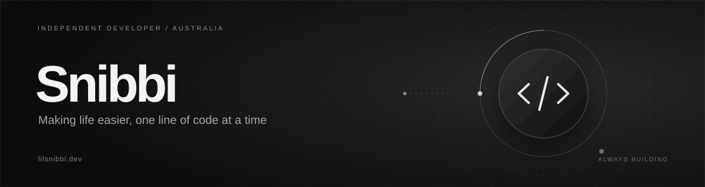
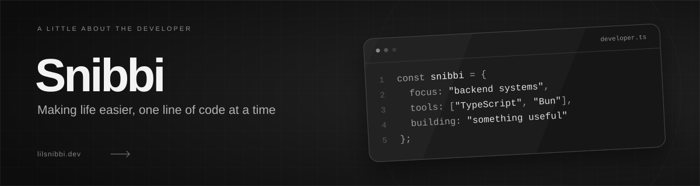
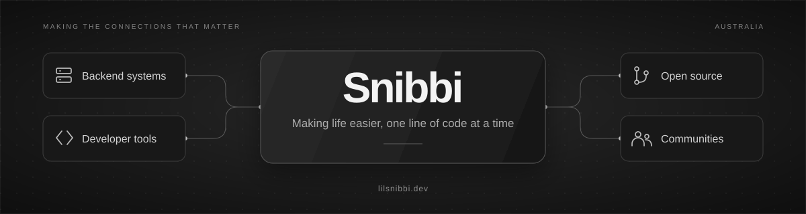
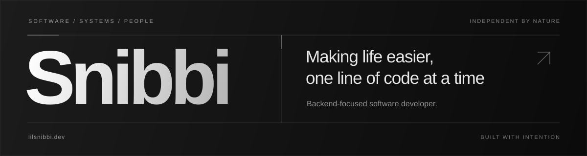
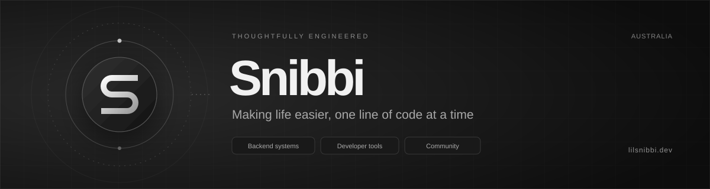
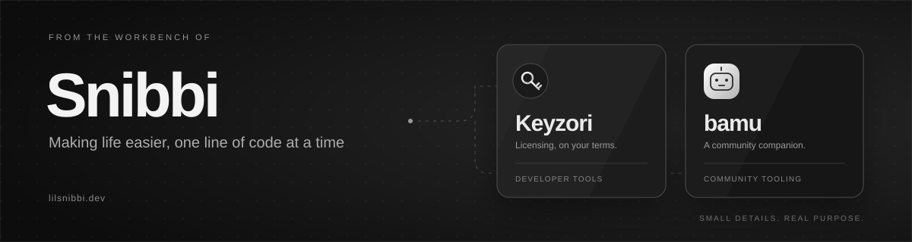
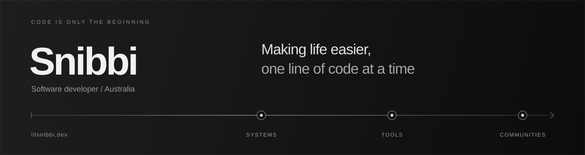
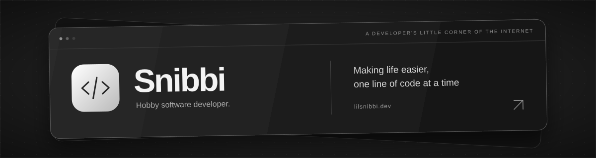
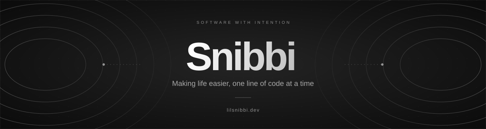

01 Orbit
Open SVG
A quiet signature. Fine orbital lines and a sculpted code emblem.
10 directions
1200 × 320 px
Monochrome / SVG
Ten slim banners, one motto: Making life easier, one line of code at a time
. Pick a number, or mix the details you like.

A quiet signature. Fine orbital lines and a sculpted code emblem.

A little personality in the source. A floating window, straight from the workbench.

The architecture-diagram direction. Systems and people, connected around you.

Type does the talking. Oversized lettering, generous space, precise rules.

A more personal mark. Keyzori-inspired rings around a custom, geometric S.

Let the work introduce you. Keyzori and bamu, distilled into miniature project cards.
An engineer's drawing board. An exploded stack, measured lines, and subtle construction marks.

One continuous idea. A calm, horizontal path from systems to tools to people.

The bamu-panel treatment. Layered cards, a bright icon tile, and a tactile finish.

A softer, atmospheric direction. A centered wordmark between fading contour lines.